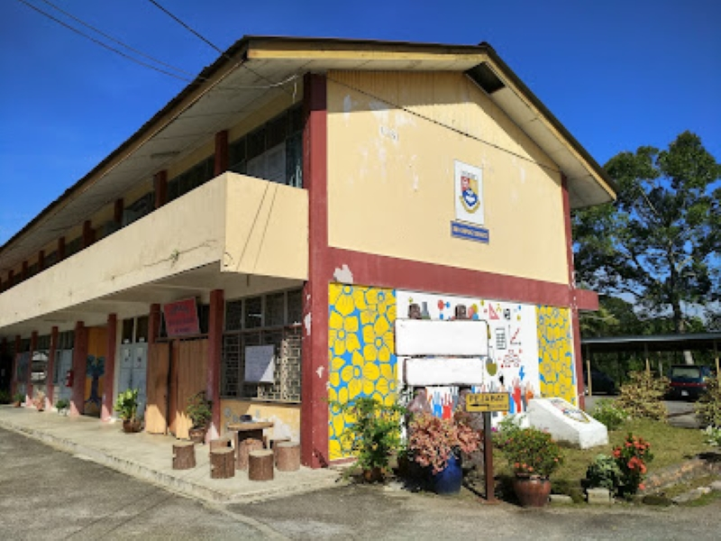
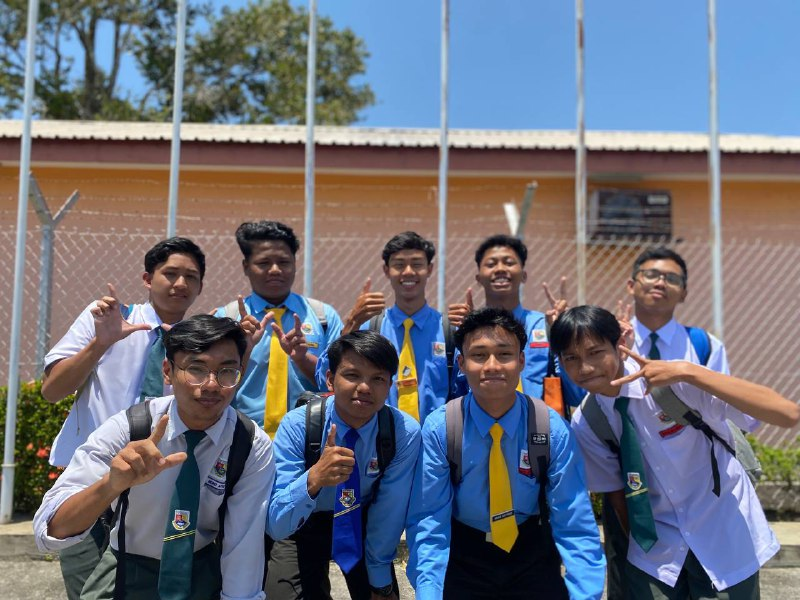
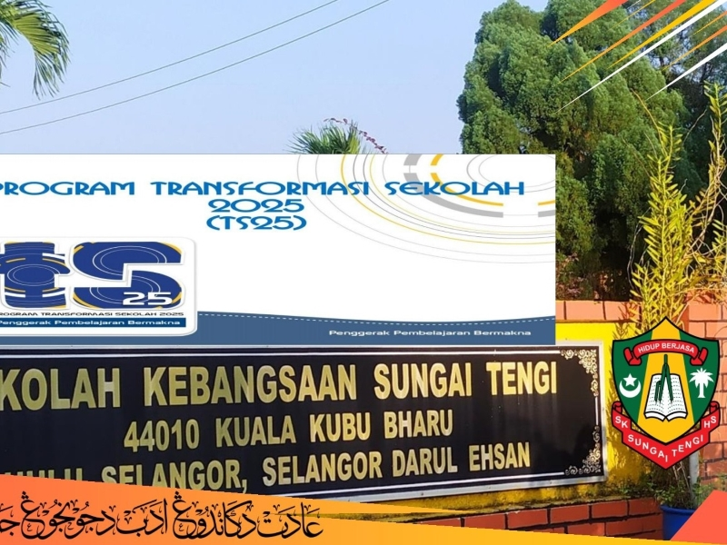

Diploma in Information Management
Universiti Teknologi MARA (UiTM) Kampus Rembau
Currently pursuing a diploma program focusing on information Management, record management, web development, and library management.


My academic achievements and learning milestones
Universiti Teknologi MARA (UiTM) Kampus Rembau
Currently pursuing a diploma program focusing on information Management, record management, web development, and library management.
Secondary School
Achievement: 5A - Demonstrated strong academic performance across multiple subjects
| Subject | Grade |
|---|---|
| Bahasa Melayu | A |
| Economy | A |
| Geography | A |
| Science | A |
| History | A |


Primary School
Completed primary education with a strong academic foundation and developed fundamental learning skills that paved the way for future success.


SPM Achievement
Years of Education
Diploma Program